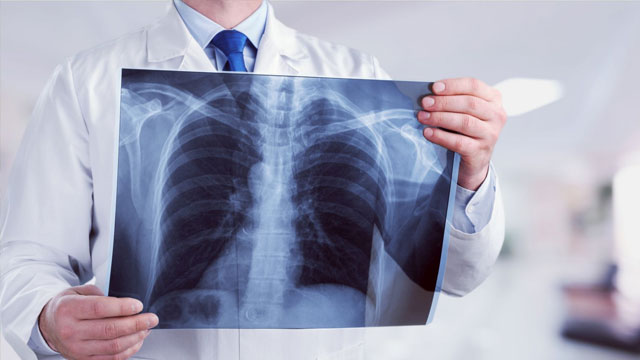

最新消息
綠推手
3分鐘檢視
你是不是綠高手
今選綠健康
健康綠頻道
眼睛乾癢恐是空氣污染惹禍！巧用人工淚液保養
近年空氣污染嚴重，民眾大多關心空污對呼吸道的影響，卻忽略了對眼睛的傷害也不小！有時候，眼睛乾澀、搔癢可能就是空氣品質不良所致，但一般人不...
不只傷呼吸道！ 汽機車廢氣恐增骨鬆風險
台灣近幾年冬季都深受「霾害」所苦，民眾為求自保，在外出入都會戴上口罩，但空氣污染的影響不只針對肺部、與心血管疾病，近期美國知名期刊研究指出...
拒絕髒空氣 醫師教你用4原則挑選空氣清淨機
秋後嚴重空污來襲，民眾為求自保，紛紛緊急採購口罩、空氣清淨機，但若要抵禦空污影響，其實亦可透過「吃」來增強免疫力、防治肺部疾病。
抵禦空污 吃這幾項食物就能保持健康！
秋後嚴重空污來襲，民眾為求自保，紛紛緊急採購口罩、空氣清淨機，但若要抵禦空污影響，其實亦可透過「吃」來增強免疫力、防治肺部疾病。

乾德門肺癌過世 醫師建議做「這個」檢查揪早期肺癌
藝人乾德門（乾爸）的經紀人宣布，罹患肺癌四期的乾爸於今（5）日凌晨四點多在台北新店的同仁醫院病逝，享壽74歲。肺癌是台灣常見的癌症，許多患者沒有抽菸習慣，甚至年紀很輕，還是難逃肺癌侵襲！預防肺癌，究竟該怎麼做？
台灣暖爸揪紫爆元凶 吸韓國、印尼取經
全台空汙拉警報，「空氣盒子」空品數據成了很多家長外出時的重要參考指標， 這項由創客發起的公民科技，讓台灣成為環境感測器最密集國家，連韓國、印尼都來取經。